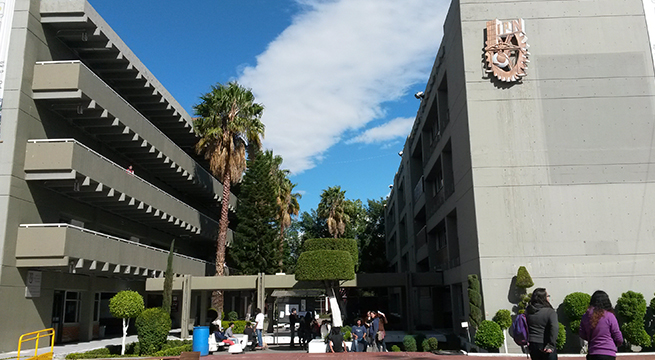
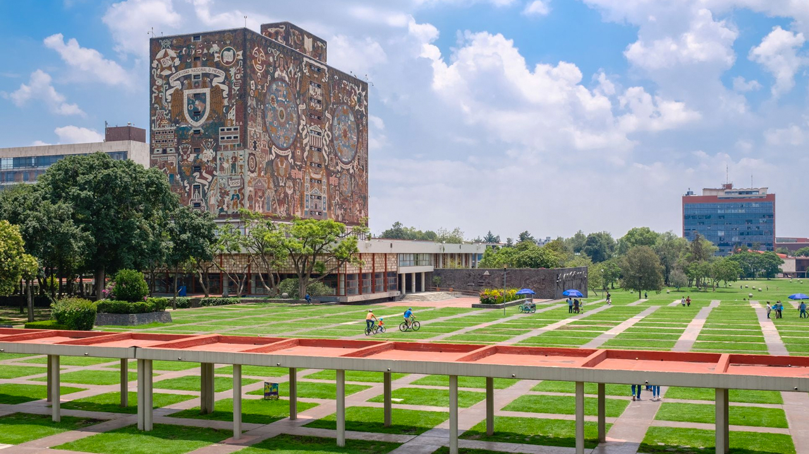

México es un país situado en la parte meridional de América del Norte. Limita al norte con los Estados Unidos, al sureste con Guatemala y Belice, al oeste y sur con el océano Pacífico, y al este con el Golfo de México y el mar Caribe. Con una extensión de aproximadamente 1.964.375 kilómetros cuadrados, México es el decimocuarto país más grande del mundo y el tercero más grande de América Latina, después de Brasil y Argentina. La diversidad del territorio mexicano no solo se refleja en su geografía y recursos naturales, sino también en su cultura y población. Las diferentes regiones del país tienen sus propias tradiciones, lenguas y costumbres, lo que hace de México un mosaico cultural vibrante y diverso. Esta riqueza geográfica y cultural es un elemento fundamental de la identidad nacional y un importante atractivo turístico.
Esta página tiene el objetivo de mostrar algunas de las universidades de nuestro país. México es un país con una larga oferta educativa. Desde instituciones públicas con una larga tradición, hasta universidades privadas que destacan por su innovación y enfoques modernos, el sistema universitario mexicano ofrece una amplia gama de opciones para estudiantes de todas las disciplinas.
El sistema educativo mexicano está estructurado en varios niveles: educación básica, media superior y superior. Educación Básica: Comprende la educación preescolar, primaria y secundaria, y es obligatoria para todos los niños y adolescentes entre los 3 y los 15 años. La educación preescolar abarca tres años, la primaria seis, y la secundaria tres. Este nivel de educación está diseñado para proporcionar a los estudiantes una base sólida en habilidades fundamentales como la lectura, escritura, matemáticas y ciencias, así como para fomentar valores y actitudes de convivencia y ciudadanía. Educación Media Superior: También conocida como bachillerato, cubre generalmente los tres años posteriores a la secundaria, y es obligatoria para los jóvenes de entre 15 y 18 años. En este nivel, los estudiantes pueden optar por un bachillerato general o un bachillerato tecnológico, que les proporciona una formación más orientada hacia el trabajo y las habilidades técnicas. El objetivo es preparar a los estudiantes para la educación superior o para ingresar al mercado laboral con una formación básica en un campo específico. Educación Superior: Incluye universidades, institutos tecnológicos y normales, y escuelas politécnicas. En México, la educación superior se divide en licenciatura, maestría y doctorado, con una amplia gama de campos de estudio disponibles. Las universidades públicas, como la Universidad Nacional Autónoma de México (UNAM) y el Instituto Politécnico Nacional (IPN), son algunas de las instituciones de mayor prestigio en el país, junto con universidades privadas reconocidas como el Instituto Tecnológico y de Estudios Superiores de Monterrey (ITESM).
 
Desafíos y Oportunidades: El sistema educativo mexicano enfrenta varios desafíos. A pesar de las mejoras en la cobertura educativa, la calidad de la enseñanza y la equidad en el acceso siguen siendo temas críticos. Problemas como la deserción escolar, especialmente en áreas rurales y entre grupos indígenas, la falta de infraestructura adecuada y la escasez de recursos son barreras importantes. Además, la calidad de la educación varía significativamente entre las regiones y tipos de escuelas, con una brecha notable entre las instituciones urbanas y rurales.
En México existen las universidades que están afiliadas a la Secretaría de Educación Pública (SEP) . Estas universidades forman parte del sistema educativo público y, por lo tanto, siguen las normas, políticas y regulaciones establecidas por la SEP para garantizar la calidad educativa. La afiliación a la SEP asegura que los programas académicos de estas instituciones cumplan con los estándares nacionales y que sus títulos sean reconocidos oficialmente. La Secretaría de Educación Pública (SEP) es una de las instituciones gubernamentales más importantes en México, encargada de diseñar y ejecutar la política educativa del país. Fundada el , la SEP ha sido fundamental en la organización y desarrollo del sistema educativo mexicano, con el objetivo de garantizar el derecho a la educación de todos los ciudadanos, desde la educación inicial hasta la superior.
Texto, , ola soy un texto sobre los utiles escolares cotidianos de toda la vida, y
Espero te haya servido. El mejor libro de python es Piensa en Python.
Y finalmente el div
H2O y r2.